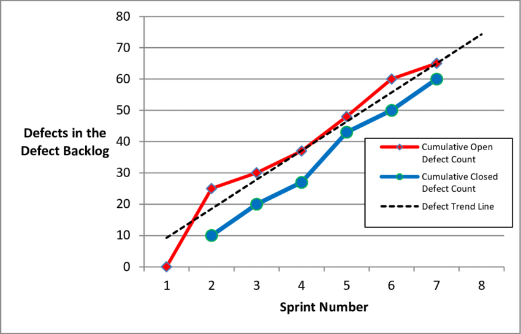
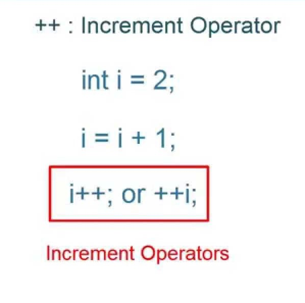

Презентация-резюме средствами ShowerJS
Нюхалов Денис
Глоссарий по методологии Scrum
Нюхалов Денис, ИВТ 1-1, 3ий курс
Abnormal Termination
Abnormal Termination - это остановка спринта, аномальное действие. Остановку инициирует Product Owner. Происходит митинг, на котором обсуждаются причины возникновения Abnormal Termination. Затем Спринт запускается вновь.
Burnup Chart
Burnup Chart - диаграмма сгорания задач. Направление графика снизу вверх. Предназначен для отслеживания объема работ, где по оси Х кол-во дней спринта, а по оси Y кол-во Story Points. Последнему дню спринта соответствует максимальное кол-во Story Points.

Definition of Done
Definition of Done - критерий, определяющий степень готовности задачи. Применяется в тех случаях когда окончательно невозможно проверить готовность задачи, например, если элемент функционала находится в другой скрам команде или компании. Описание DoD начинается со строчки «done = », например, done = функционал реализован в тестовой среде, требуется выгрузка и проверка в основной среде.
Epic
Epic - одна из нескольких глобальных функций продукта. В эпике могут содержаться User Story, например, пакет пожеланий одного пользователя или список задач (Task) для реализации Эпика.
Increment
Increment - определенная часть работающего программного обеспечения, которая добавляет полезный и работающий функционал к ранее созданной версии, сумма всех приращений в целом - форма продукта.
Product increment

Product increment - реальный результат работы по итогам одного спринта. В данном случае речь может идти о внедрении новой функции на сайт или мобильное приложение. Главная задача — показать пользователям, что задача решена вовремя.
Scrum Master
Scrum Master - арбитр, который организует и проводит совещания, следит за соблюдением всех принципов скрама, разрешает противоречия и защищает команду от отвлекающих факторов, проводит фасилитацию митингов, отвечает за учет, хранение и выдачу SCRUM-инвентаря. Данная роль не предполагает ничего иного, кроме корректного ведения скрам-процесса.
Scrum Poker (Planning Poker) (Покер планирования)

Расставление Story Points (за основу взят ряд Фибоначчи – 1,2,3,5,8,13). Задачи 13 и более поинтов необходимо дробить на более мелкие.
Scrum Team (Скрам-команда)

В нее входят специалисты, знакомые со многими функциями, и работающие над созданием продукта от начала и до конца. В команду входят представители разных профессий, у каждого свой взгляд и свое мнение.
Sprint Review
Sprint Review - обзор спринта, участвуют все, встреча открытая. Команда рассказывает, что было сделано, и демонстрирует те части проекта, которые окончательно готовы.
Story Points
Story Points - единица оценки сложности выполнения задачи. Story Points имеет смысл применять, если проект состоит из 3-х и более спринтов, так как у команды накапливается статистика и опыт оценивания задач. На проекте из одного-двух спринтов использовать Story Points нет смысла, если только не для получения практики.
Transparency
Transparency - один из трёх Принципов Скрама. Значимые аспекты процесса и продукта должны быть доступны тем, кто отвечает за его результат. Соблюдение принципа прозрачности подразумевает, что эти аспекты объединены в общий стандарт, и все участники процесса обладают единым их пониманием.